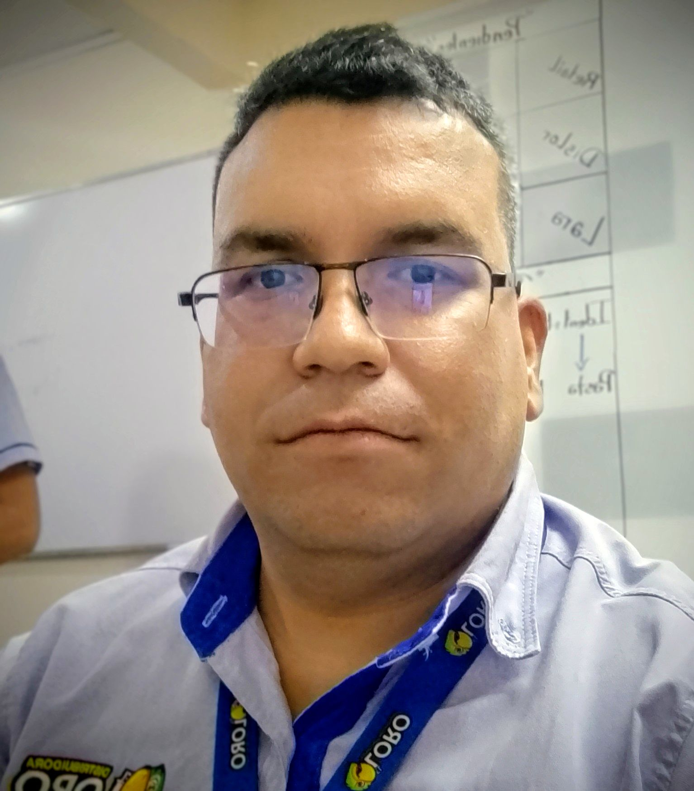

George Willmer Galíndez Lugo
Especialista TI & Software Developer
Resumen Profesional
Especialista en Infraestructura TI y Desarrollador de Software con más de 15 años de trayectoria garantizando la continuidad operativa de plataformas críticas. Experto en administración de redes seguras (Mikrotik), virtualización de alta disponibilidad (Proxmox) y soporte técnico Nivel 3. Poseo un perfil híbrido único que integra el dominio del hardware y redes con el desarrollo de aplicaciones web (Laravel/Vue) para la automatización de procesos y optimización de la inteligencia de negocio (Power BI).
Habilidades Técnicas
Infraestructura y Redes
Desarrollo de Software
Sistemas y Cloud
Bases de Datos y ERP
Experiencia Profesional
Analista de Soporte y Tecnología
Distribuidora El Loro
- Lidero la estabilidad tecnológica de 3 sedes regionales, garantizando una operatividad del 99.9% mediante la supervisión de infraestructuras críticas.
- Implementé un entorno de virtualización con Proxmox VE y almacenamiento centralizado (OMV), optimizando recursos de hardware en un 40%.
- Diseñé y desarrollé un ecosistema de aplicaciones (Laravel + Vue + Capacitor) para ventas, logrando sincronización en tiempo real cada 5 minutos.
- Administro redes core basadas en Mikrotik y túneles VPN para la interconexión segura entre sucursales.
- Ejecuto la estrategia de BI mediante Power BI, transformando datos operativos en tableros de control gerenciales.
Analista de Sistemas
La Victoria C.A
- Optimicé la infraestructura de red LAN/Wifi mediante configuración avanzada de Mikrotik, mejorando el rendimiento interno.
- Administré la plataforma ERP Profit 2k12, asegurando la integridad de los datos financieros y comerciales.
- Implementé sistemas de control biométrico y seguridad CCTV, fortaleciendo el resguardo de activos.
Técnico de Implementación
Multimax Store C.A
- Ejecuté el despliegue tecnológico en grandes superficies, incluyendo instalación masiva de CCTV (64 cámaras) y redes de alto tráfico.
- Configuré la red core con Mikrotik RB4011 para soportar la operación de la tienda.
- Administré servidores en entornos mixtos Windows Server (VMware/Proxmox), garantizando la disponibilidad del POS.
Analista de Soporte / Web Dev
Tiendas Aurora C.A
- Implementé la arquitectura tecnológica base de múltiples sedes (Redes, CCTV, Alarmas).
- Soporte nivel experto al Sistema Valery y mantenimiento de infraestructura Windows Server 2k12 R2.
- Desarrollé y gestioné la presencia digital corporativa de la organización.
Proyectos Destacados
Sistema POS Infinito (SaaS B2B para PyMEs)
Arquitecto y Desarrollador Full-Stack
- Lidero el desarrollo de una plataforma multitenant orientada a la modernización de pequeños comercios locales.
- Arquitectura modular con Laravel y Vue.js, integrando capacidades offline-first para mitigar problemas de conectividad regional.
- Resolución de procesos complejos de facturación e inventario mediante un motor de base de datos optimizado.
Educación
T.S.U en Informática
IUT Antonio José de Sucre
Ingeniería Electrónica (Hasta 5to Semestre)
UNEXPO Barquisimeto
Escanea el perfil online